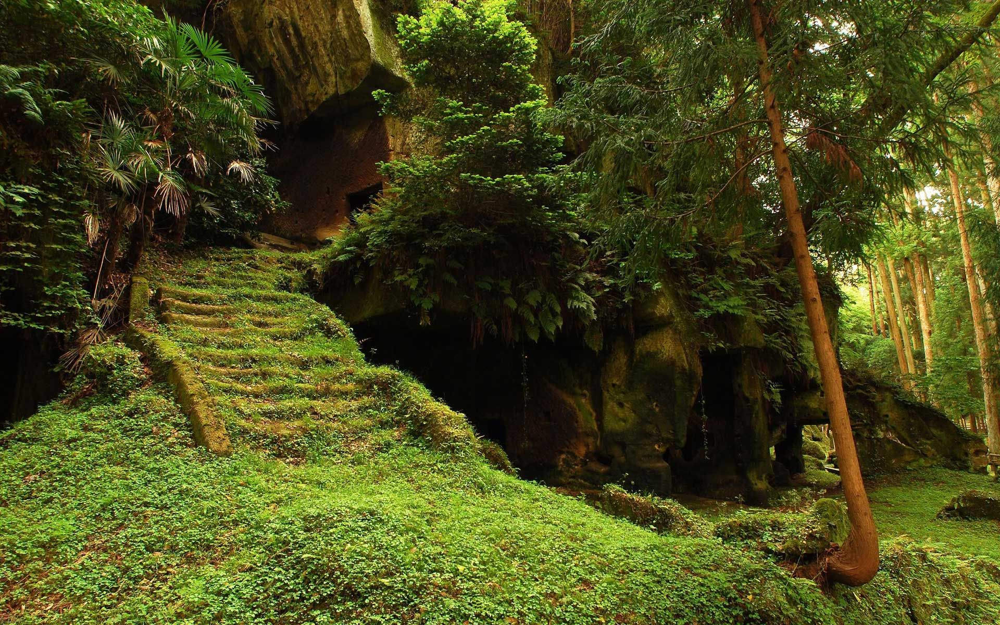
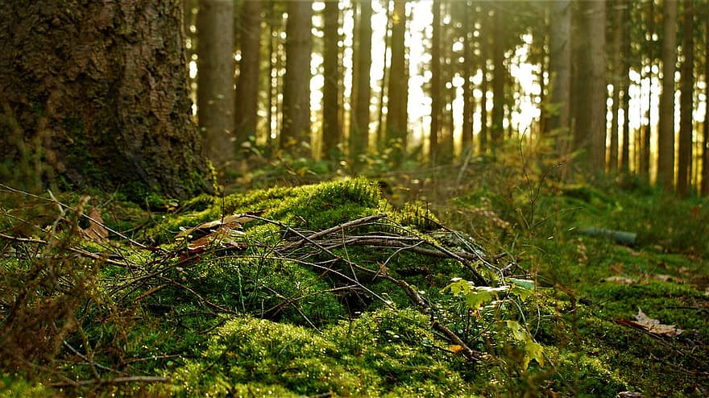
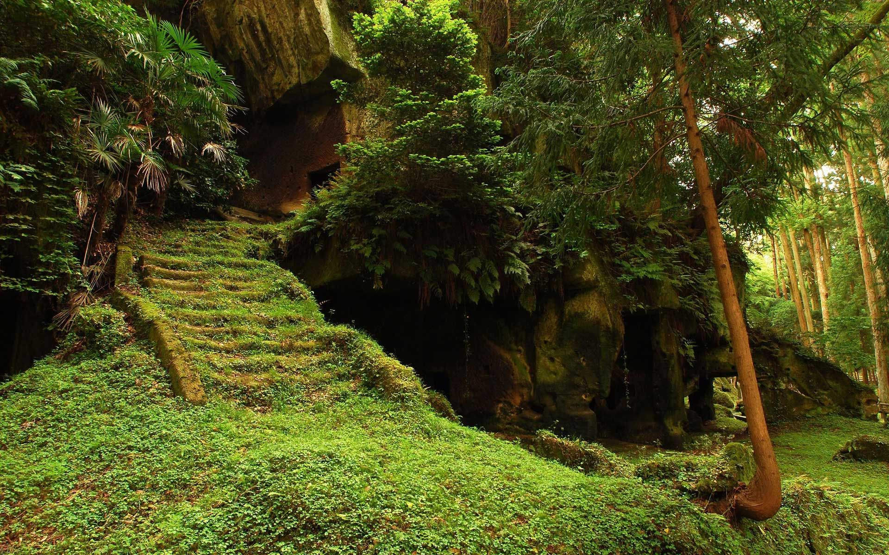
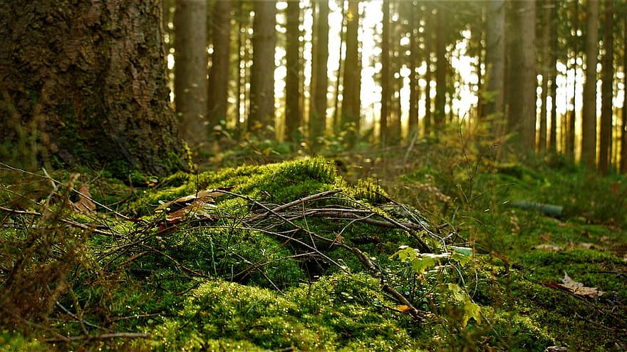

READING RESPONSE 4: MY WEBSITE IS A SHIFTING HOUSE NEXT TO A RIVER OF KNOWLEDGE
My website is a forest. It's a living, breathing, self-nurturing ecosystem. The strong and tall trees gives my website its foundational structure. The diverse animals that live or pass by, leave their marks and offer my website full of knowledge. My website also has different emotions. Sometimes, the sun sheds my website light that shimmers feelings of nostalgia or strength. Sometimees it feels under the weather and is enduring winds and rain. Sometimes, it feels scared and wants to hide when it's dark. My website is vast and has many hidden secret that are still undiscovered. Even when people tree to take away my foundational structure for their own purposes, I am strong and willing to start over from a little bud.
  
 
SITE BY WENDY LIU